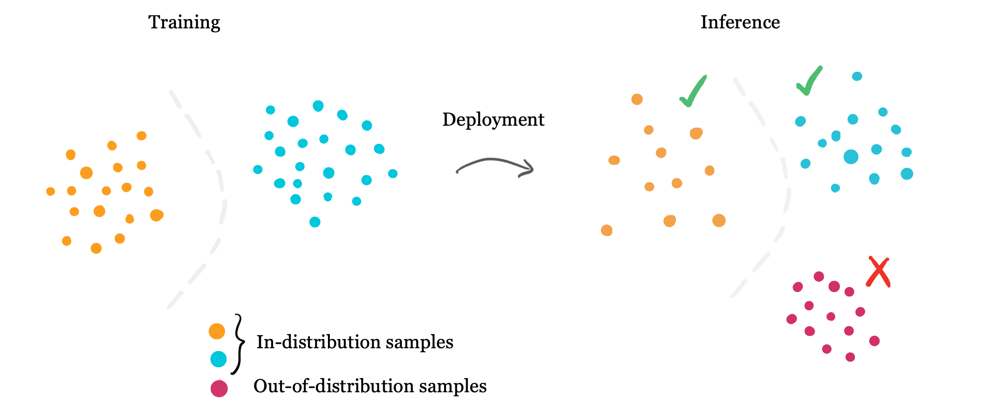

Project information
- Keywords:
Machine Learning,
Uncertainty Estimation,
Out Of Distribution detection,
Medical AI,
Electronic Health Records - Date: January-August, 2021
- Link: Blog Post
Out-of-Distribution Detection in Medical AI
Machine learning models assume that new samples are similar to data they have been trained on. More precisely, we assume that the data is independent and identically distributed. Samples that are similar to training data are considered to be in-distribution. However, in practice, we have no guarantee that a model will only see data that it similar to data it has been trained and tested on. Samples that are not well represented in the training dataset are considered to be Out-Of-Distribution (OOD). However, are many clinically relevant scenarios that can lead to changes in data distribution.